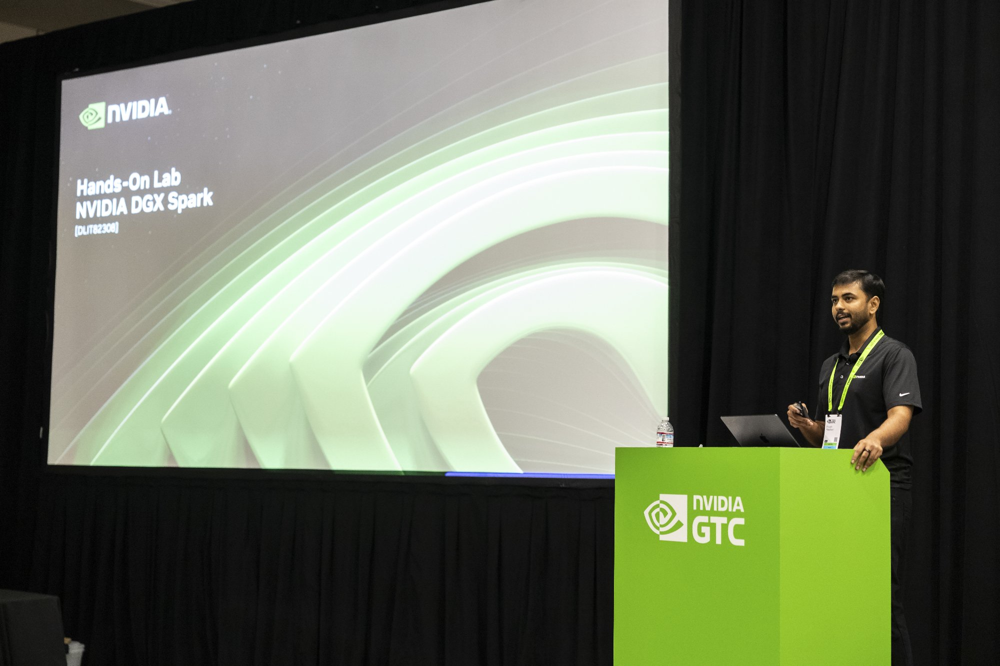
Teaching · DLI sessions
Jetson & DGX Spark
I deliver hands-on sessions on Jetson and DGX Spark. At GTC 2026, I was a lab instructor for local AI setup, inference, and agent workflows on DGX Spark.
Explore the GTC 2026 labEngineer / Local AI / Robotics
I build and experiment with local AI and robotics, exploring new models and understanding the hardware behind them. Away from the keyboard, I enjoy dancing, table tennis, and hiking.
Explore my experience01 Career & capabilities
Engineering roles and internships at NVIDIA, MathWorks, PLEN Robotics, and Giscle India, spanning AI performance, GPU-accelerated robotics, developer tools, and technical enablement.
Local AI, Robotics, Developer Enablement & Technical Marketing
Remote · Natick, Massachusetts
Simulink · ROS Toolbox Team
Osaka, Japan
PLEN Cube applications & product demonstrations
Bengaluru, India
Self-driving toolkit & driver monitoring
Intel RealSense · Computer vision · Prototyping
02 About me
Santa Clara, California
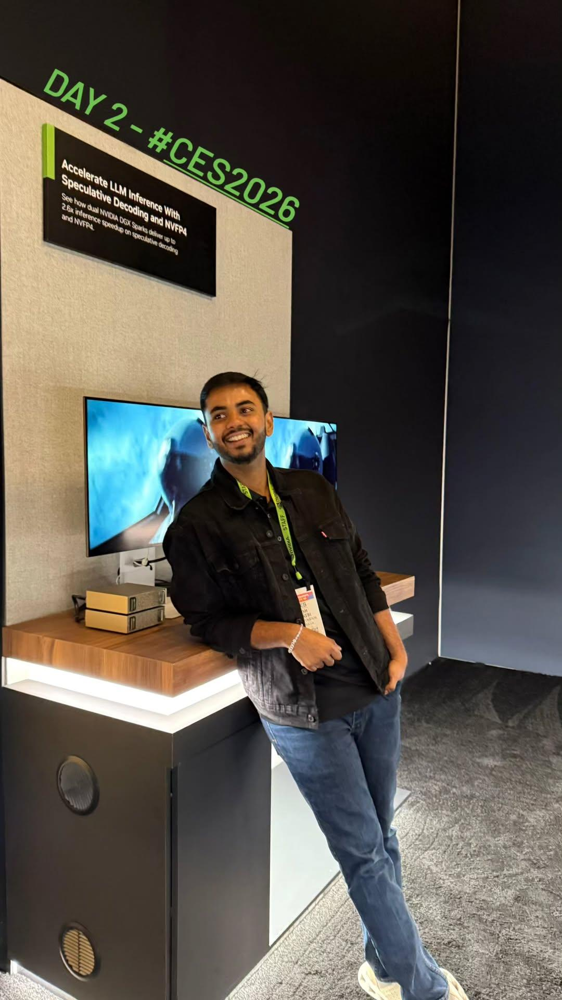
I like building things, bringing people together, and trying something new.
I enjoy turning an idea into something real, especially with people who bring a different perspective. I’m comfortable taking the lead, helping a group find its direction, and making sure everyone has a chance to contribute. I take what I do seriously, but there’s always room for a laugh along the way.
Outside work, I love dancing, a good game of table tennis, and getting out for a hike. I’m always up for a little friendly competition or a walk through a different downtown. I enjoy a change of scene, good company, and discovering somewhere new.
03 Talks, demos & community
I enjoy bringing people into the conversation: sharing what I know, learning from others, and helping someone try something new.

Teaching · DLI sessions
I deliver hands-on sessions on Jetson and DGX Spark. At GTC 2026, I was a lab instructor for local AI setup, inference, and agent workflows on DGX Spark.
Explore the GTC 2026 lab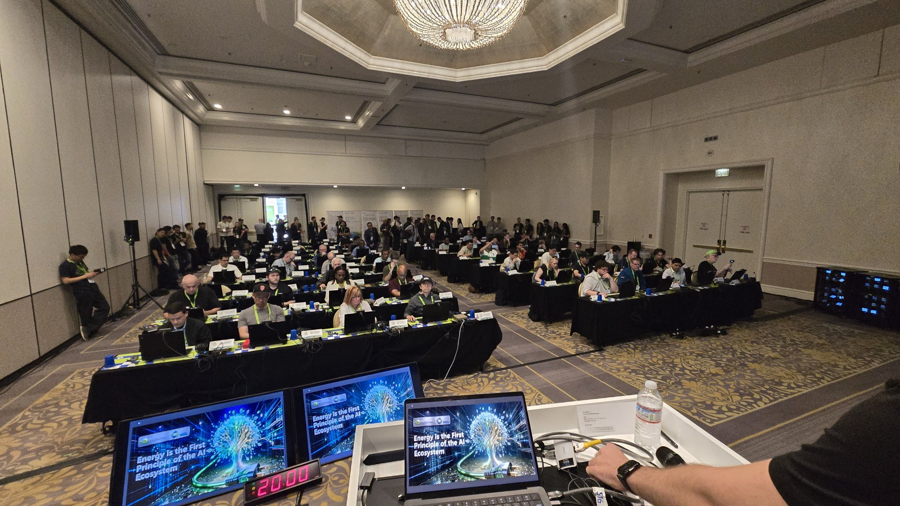
Open course · Co-instructor
I co-taught an Isaac Sim + Jetson course on connecting simulated robots with real hardware, and helped publish the course materials openly.
Explore the open course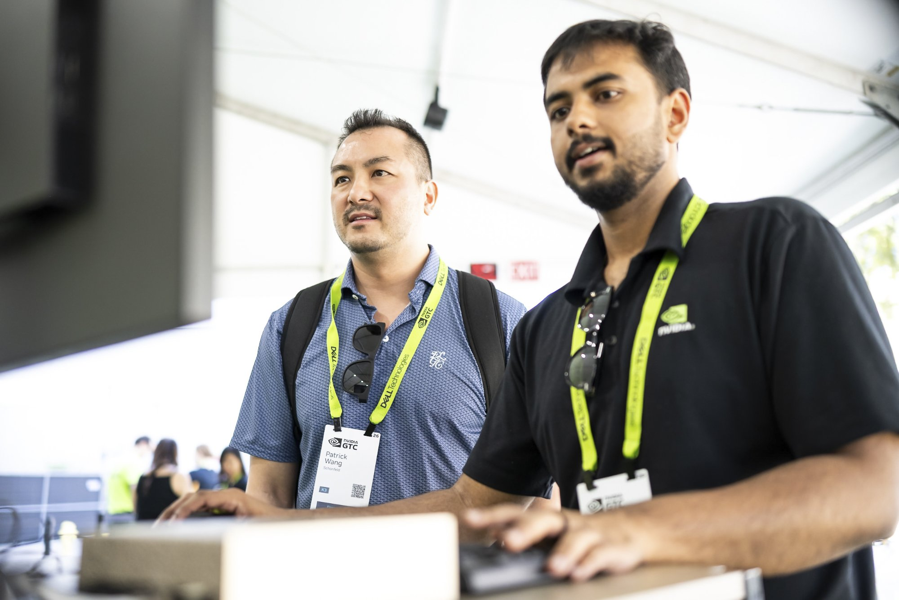
Live demos
At Build A Claw, I shared a working demo and explored the technology with attendees. I enjoy the questions and ideas that come from trying things together.
Explore the Build A Claw event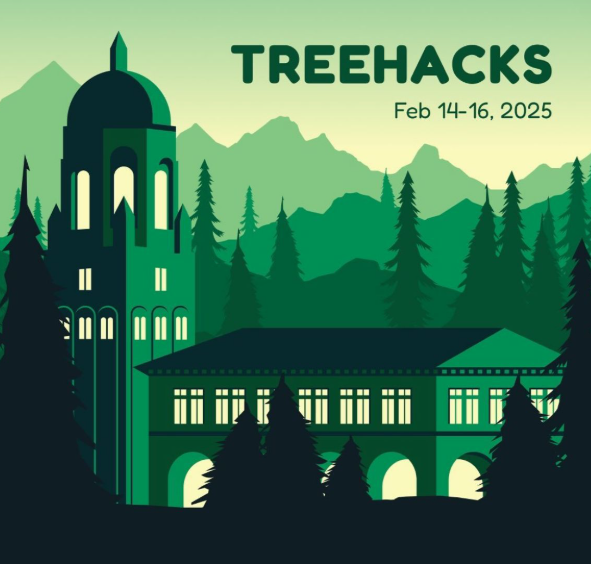
Hackathons & community
I don’t just build at hackathons. I’ve also served as a judge at TreeHacks and other hackathons, reviewing projects and learning from other builders.
I worked on Robot navigation using VLMs in Isaac Sim, which earned third place at an NVIDIA hackathon. It used a vision-language model, Isaac Sim, and Jetson Orin to interpret camera input and guide a simulated robot’s navigation.
See the navigation demo04 Projects
A selection of software tools, local AI experiments, and earlier robotics prototypes.
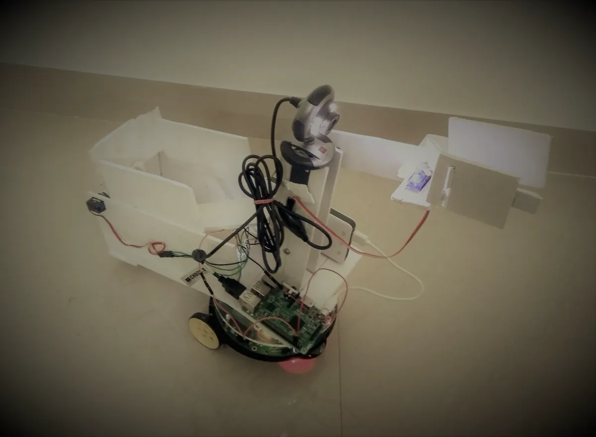
Computer vision
An E-Yantra project that used a camera to find the requested fruit, pick it with a gripper, and deliver it to the right place.
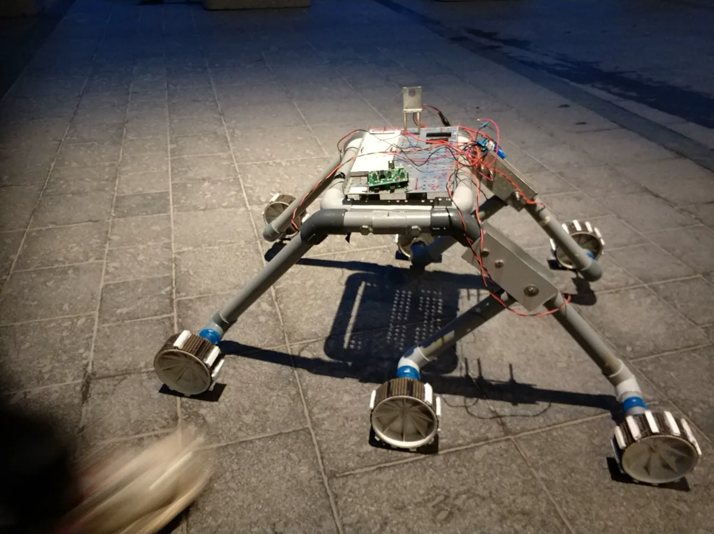
Assistive robotics
An Arduino-based prototype built in 24 hours, using a gyroscope for stability. It placed first among 30 national teams and later received an IEEE Best Hackathon Project award.
Developer tools
A platform I built for finding, reserving, and connecting to shared Linux, macOS, and Windows development machines, with device-health monitoring.
See the code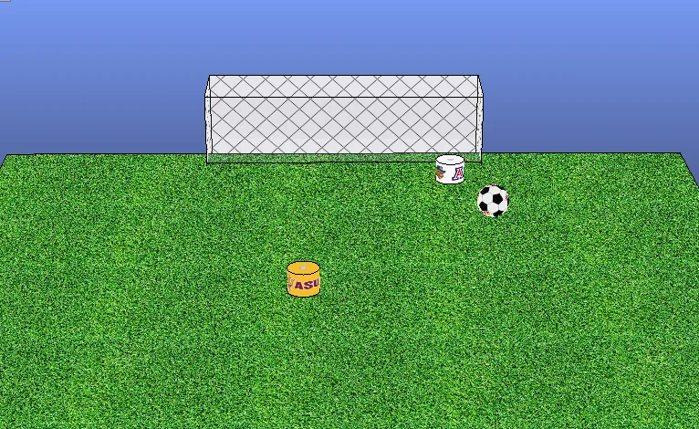
Reinforcement learning
A simulated striker and goalkeeper trained against each other using Q-learning in V-REP. An experiment in how actions and rewards shape behavior.

Personal project
A DGX Spark setup for trying models and running a Qwen-powered research and email service, with scheduling, duplicate checks, and recovery when services fail.
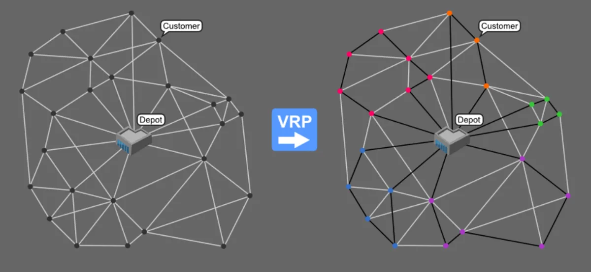
Planning
A ROS and Gazebo project comparing two ways to group packages and plan delivery routes, breaking one large routing problem into smaller ones.
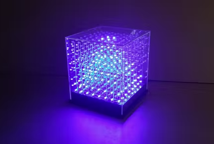
Creative electronics
I was bored, so I built LED lights that sync with music beats. A small, just-for-fun experiment.
Watch the LED demoComputer vision · Giscle India
Built during my Giscle India internship, this prototype used an Intel RealSense camera to detect prolonged eye closure and sound an alarm after an adjustable delay, initially five seconds. It was also tested with an Ola driver.
Explore the Giscle prototype05 Off the clock
Hiking, table tennis, dancing, and saying yes to something new.
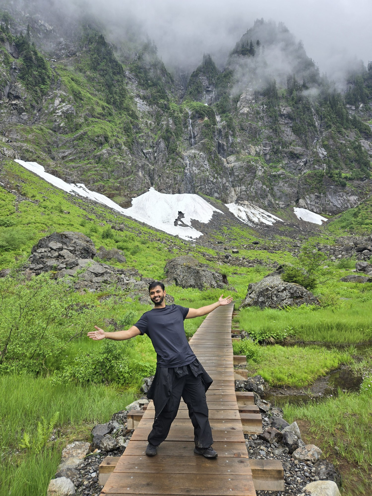
A little adventure. A lot of fun.
I love a good hike, a competitive game of table tennis, and any excuse to dance. I’m also trying skiing and snowboarding. There’s always something new to learn.
And I love a good party. Great music, good company, and a reason to celebrate: I’m very much a “work hard, party harder” person.
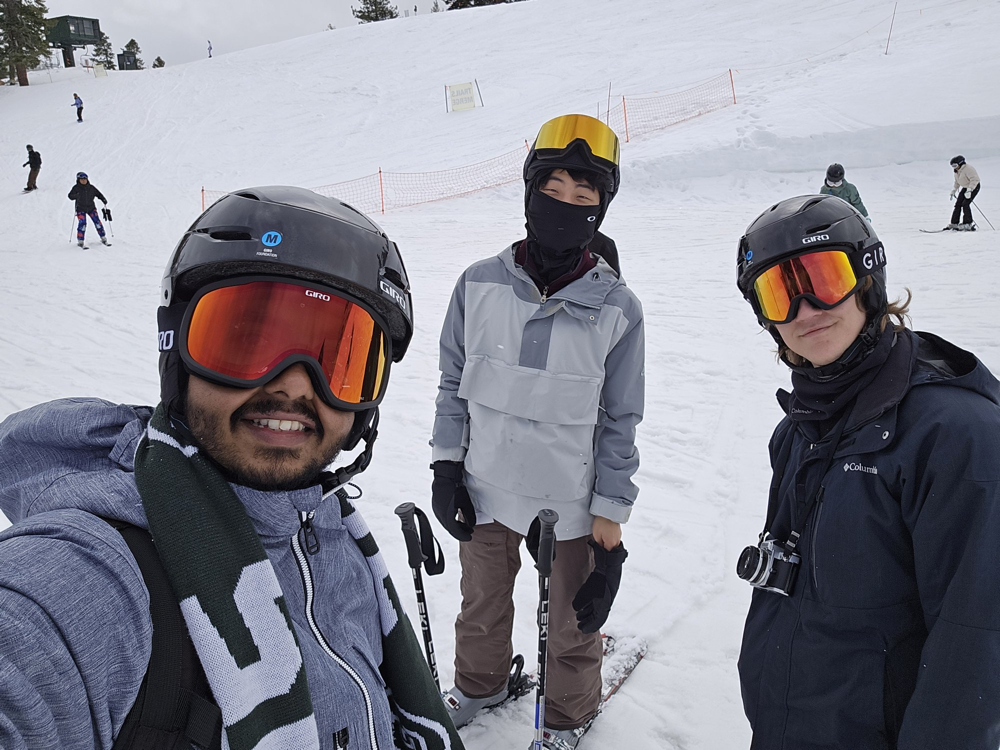
06 Get in touch
Have a project in mind, an interesting engineering role, or a shared interest? Let’s talk.